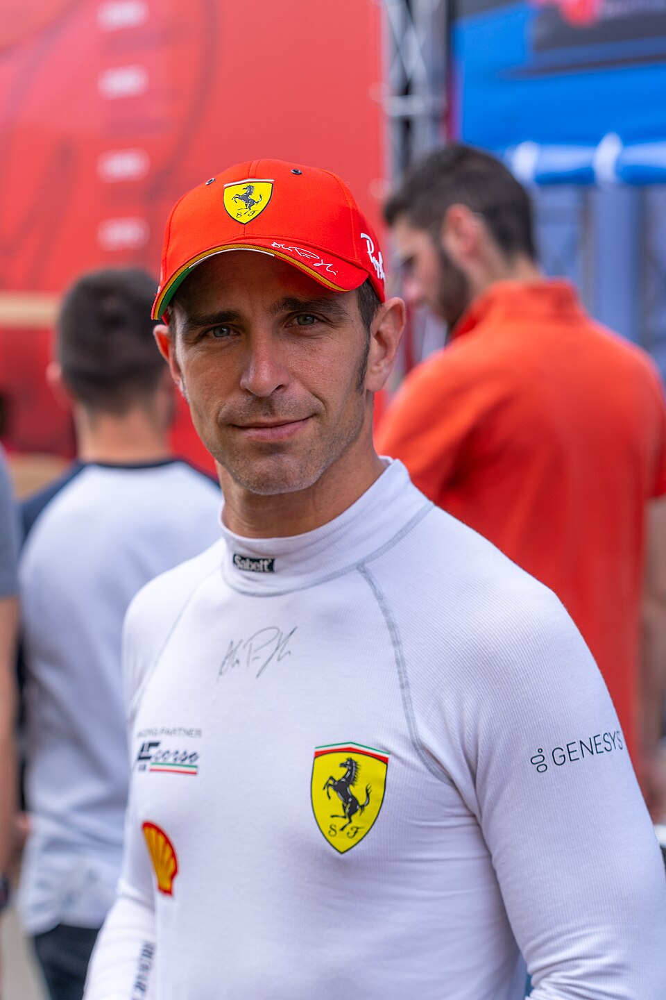
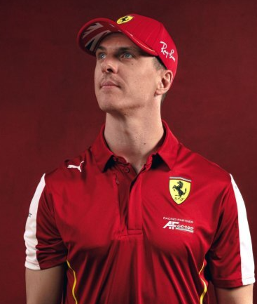

Ferrari в чемпионате WEC
Ferrari имеет богатейшую историю в гонках на выносливость, начиная с 1950-х годов, когда команда доминировала в Чемпионате мира спорткаров. В 2023 году Ferrari триумфально вернулась в высший класс эндуранс-гонок после 50-летнего перерыва с прототипом Ferrari 499P в категории Le Mans Hypercar.
Историческое достижение 2025 года:
В сезоне 2025 года Ferrari завоевала оба титула FIA WEC — чемпионство среди производителей и чемпионство среди пилотов, завершив 53-летний перерыв с момента последнего мирового титула в 1972 году. Команда выиграла первые четыре гонки сезона и финишировала с огромным отрывом в 74 очка от ближайшего конкурента Toyota.
Главные достижения Ferrari в WEC:
- Чемпионы мира среди производителей и пилотов 2025 года
- Три победы подряд в 24 часа Ле-Мана (2023, 2024, 2025)
- 8 титулов производителей в WEC (включая GT-классы)
- 6 титулов пилотов в WEC
- Доминирование в классе GTE: 2012, 2013, 2014, 2016, 2017, 2021, 2022
Алессандро Пьер Гуиди

Алессандро Пьер Гуиди — итальянский гонщик, заводской пилот Ferrari и чемпион мира WEC 2025 года. Родился 8 сентября 1983 года в Турине, Италия.
Пьер Гуиди выступает за Ferrari с 2012 года и является одним из самых успешных пилотов команды в эндуранс-гонках. В 2025 году он стал чемпионом мира WEC в экипаже Ferrari 499P №51 вместе с Джеймсом Каладо и Антонио Джовинацци.
Достижения:
- Чемпион мира WEC 2025 (Hypercar)
- Победитель 24 часов Ле-Мана 2023
- Чемпион LMGTE Pro 2017
- Многократный победитель в классах GT
- Заводской пилот Ferrari с 2012 года
Интересные факты:
- Пьер Гуиди известен своей тактической дисциплиной и способностью управлять гонкой на длинных дистанциях.
- Он одержал победу в 24 часа Ле-Мана 2023 — первую для Ferrari с 1965 года в общем зачёте.
- Алессандро — один из немногих пилотов, выступавших за Ferrari как в GT, так и в прототипах.
- Его прозвище в команде — "Il Professore" за аналитический подход к гонкам.
Джеймс Каладо

Джеймс Каладо — британский гонщик, заводской пилот Ferrari и чемпион мира WEC 2025 года. Родился 13 июня 1989 года в Бромли, Великобритания.
Каладо выступает за Ferrari с 2014 года и является одним из самых титулованных пилотов команды. В 2025 году он завоевал свой пятый титул чемпиона мира WEC, став чемпионом в высшем классе Hypercar.
Достижения:
- 5-кратный чемпион мира WEC (2013, 2014, 2017, 2021, 2025)
- Победитель 24 часов Ле-Мана 2023
- Чемпион LMGTE Pro 2017, 2021
- Чемпион GP3 2010
- Резервный пилот Формулы-1 (Force India, 2012-2013)
Интересные факты:
- Каладо — один из самых успешных британских пилотов в истории WEC.
- Он провёл несколько сезонов в качестве резервного пилота Формулы-1, но нашёл свой успех в эндуранс-гонках.
- Джеймс известен своей невероятной консистентностью и способностью выступать в любых условиях.
- После победы в чемпионате 2025 года Каладо эмоционально заявил: "Это не просто титул, это наше наследие".
- Он является одним из немногих пилотов, выигравших титулы как в GT, так и в прототипах за Ferrari.
Антонио Джовинацци

Антонио Джовинацци — итальянский гонщик, бывший пилот Формулы-1 и чемпион мира WEC 2025 года. Родился 14 декабря 1993 года в Мартина-Франка, Италия.
Джовинацци выступал в Формуле-1 за команды Sauber и Alfa Romeo Racing (2017-2021), после чего перешёл в WEC в качестве заводского пилота Ferrari. В 2025 году он стал чемпионом мира в экипаже Ferrari 499P №51.
Достижения:
- Чемпион мира WEC 2025 (Hypercar)
- Победитель 24 часов Ле-Мана 2023
- 62 старта в Формуле-1 (2017-2021)
- Чемпион GP2 2016
- Резервный пилот Ferrari F1 (2021-2023)
Интересные факты:
- Джовинацци — один из немногих итальянских чемпионов WEC последних лет, что сделало его победу особенно символичной для Ferrari.
- После ухода из Формулы-1 он успешно переквалифицировался в эндуранс-гонки и быстро адаптировался к прототипам.
- Антонио известен своей агрессивной, но чистой манерой вождения.
- Он одержал победу в Ле-Мане 2023 в свой дебютный год в WEC — редкое достижение.
- Джовинацци продолжает работать с Ferrari в качестве симуляторного пилота для команды Формулы-1.
Вернуться на главную

{kind=link}